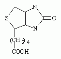
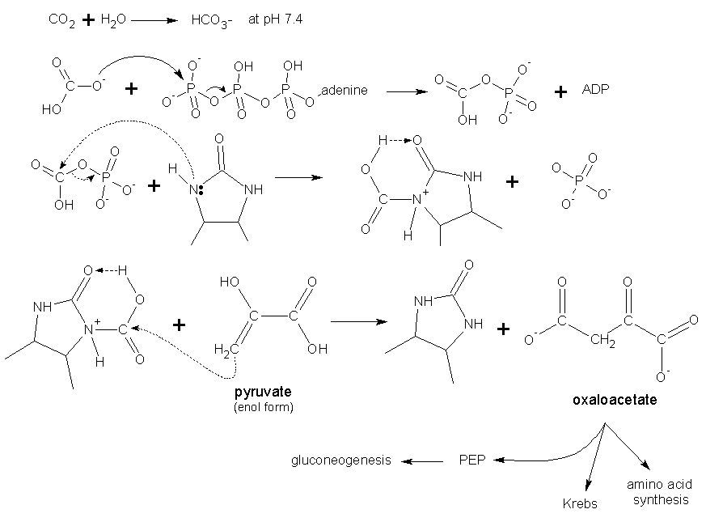
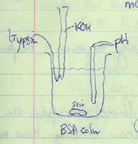
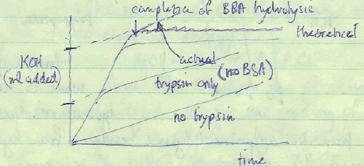

Biochemistry
Citrate is a nonchiral molecule that produces a chiral (nonracemic) product in D-isocitrate with aconitase. Normally in chemistry, chiral products cannot be formed from achiral reactants. The Ogsten hypothesis states that a symmetric (nonchiral) substrate being acted upon by an asymmetric enzyme enzyme can produce chiral products. This is so because the binding sites of an enzyme to an achiral substrate are not such that it can bind its mirror image. For example,
X1 X2
X3
Suppose X1 represents the α-carbon binding site to citrate, X2 is the active site binding, and X3 is the binding site to CH2COO−. In this case citrate binds the enzyme is a chiral way and the reaction done with an intermediate that allows formation of the racemic product.
A likely prokaryotic symbiont that formed within the eukaryotic cell probably 1-2 billion years ago. Evidence for this comes from several facts:
The outer membrane of animal cell mitochondria si permeable to substances whose mass is < 6000 Da.
An intermembrane space exists and its size and volume depend on the changes in the inner membrane with its cristal folds.
The inner membrane is permeable to nothing, and the only substances able to pass must have transporters (transport proteins). Succinic dehydrogenase is bound on the inner membrane.
The matrix holds all soluble enzymes of the Krebs Cycle.
Many mitochondrial intermediate metabolites have the fates in biosythesis:
The following reaction is of pyruvate carboxylase and is mediated by biotin (covalently bound to the enzyme by a lysine ε-NH2 group).
pyruvate + ATP + CO2 —> oxaloacetate + ADP + Pi
The structure of biotin is:

The carboxyl group of the co-enzyme forms an amide bond with an ε-NH2 group of a lysine to the enzyme to which it is associated. The sequence of reactions involving biotin-mediated carboxylation are as follows:

Pyruvate carboxylase is activated in high energy (anabolic) states. When cells are in a high energy state, what sort of molecules would one expect to regulate the enzyme? Certainly ATP and acetyl-CoA are at high levels, and in fact, acetyl-CoA is a positive effector because oxaloacetate (OAA) reacts with acetyl-CoA in the citrate synthase reaction.
6 April 1981
Assays of proteins should be selected on three criteria:
Typically assays are spectrophotometric in which absorption of a chromophore is measured. A spectrum of absorption vs. wavelength shows continuous maxima and minima representing vibrational state transitions.
The relative transmission, or intensity of light, I can be related as follows:
transmittance = I / I0 = 10−εcl
where I0 is the incident intensity, I is the intensity after transmission through an absorbing sample, ε is a constant representing an extinction coefficient, c is the concentration of the absorbing material, and l is the path length of the transmission.
The expression:
A = − log (I / I0) = εcl
defines the logarithmic decrease in transmission to be the absorption, and the expression shown above is called the Beer-Lambert Law.
8 April 1981
Spectrophotometers are instruments used to measure absorption of color. The simplest spectrophotometers consist of a:
The lamps of spectrophotometers can be hydrogen (deuterium) or tungsten for UV. [also can use mercury].
Bronsted-Lowry theory holds that acids are proton donors.
HA ↔ H+ + A−1
Ka′ = [H+][A−] /
[HA]
pKa′ = −log Ka′
pH = = −log [H+] = pKa′
+ log [A−] / [HA]
Kw = 10−14
pKw = 14
Other relevant equations in acid-base equilibria:
A−1 + H2O ↔ HA + OH−
Kb = Kw / Ka =
[HA] [OH−] / [A−]
Formol titration of protein (such as BSA) hydrolysis attempts to use pH to make a quantitative analysis of peptide cleavage sites and ionizable groups. Consider the amine group involved in the peptide bond:
R-NH3+ ↔ R-NH2 + H+
At pH 8, 70% of the form of the amine is ionized (+1 charge) while 30% has no charge (0 charge).
Suppose that the pKa of the amine group is altered, and this alteration produces a new pH = 7. OH− is added to bring back the pH to 8, and the titration computed. The ionization proportion is now 60% in +1 state and 40% unionized (0 charge).
Changes in pKa can occur by trypsin digestion or by addition of formol. Release of protons (H+) can then be determined by OH− titration. These protons come from the newly created ionizable groups releasing their protons. If ionization is 60% after the method and 70% before the method, 10% of the ions comes from the newly created ionizable groups. Thus the moles of protons is equal to 10% of the total moles of ionizable groups.
The titration is usually set up to plot the volume of base (KOH) added against time. KOH is added to maintain a constant pH. The plot is shown to the right and the setup at left.
 
When hydrolysis is complete, the titration goes back to pH 8 and [H+]/[HA] is computed from knowledge of pKa and pH, to determine the count of peptide bonds cleaved:
moles of H+ released = (x percentage)(moles of amino groups formed)
To count the number of residues, suppose at the pKa at pH 8.5 there is 20% acid and 80% base from. There are 1 mole H+ for each peptide bond hydrolyzed. Thus 0.8 moles of H+ were formed for each mole peptide bond hydrolysis. Thus to get the mole of peptide bonds, one divides the moles of H+ (as determined by OH− titration) by 0.8. Other factors that must be considered include dissolution of CO2 to increase acidity, and that action of trypsin itself.
When formaldehyde is added, protons are released into the solution for base titration. This has also been used to determine the number of Arg and Lys residues in a protein.
Acetylation of proteins. Incubation of a protein like BSA with acetic anhydride will result in acetylation of primary amines:
-NH2 + CH3C(=O)-O-C(=O)-CH3 → -NH-C(=O)-CH3 + CH3-COO− + H+
Addition of formaldehyde should result in no pH shift and so the degree of acetylation is determined by formaldehyde. BSA so modified will now hydrolyze only on Arg residues since Lys residues have been modified.
The glass electrode of the pH metering system is the electrode that is permeable to protons and thus measures the pH. As proton move in and out in reaching equilibrium, the change in potential energy is governed by the Nernst equation:
| E = | RT | ln | [H+]inside |
| nF | [H+]outside |
where n = 1. Suppose the solution inside the bulb is 0.1 N HCl. The equation is transformed to make E a function of pH, taking note that pH = −log [H+] and ln [H+] = pH ln 10 = 2.3 pH. Thus it becomes
E = K + 2.3 RT (pH) / F
The pH meter circuit is formed by a silver (Ag) wire surrouded by a AgCl paste in the chamber that includes the permeable glass bulb with 0.1 N HCl present. Another chamber contains a fritted portion containing saturated KCl. The AgCl paste is reduced:
AgCl + e− → Ag0 + Cl−
The pH meter must be standardized, which provides a reading of value K. A pH 7 solution finds a particular value E which is E0. Note the equation includes T and thus there is temperature dependence.
Problems can occur with pH metering:
15 April 1981
An enzyme (E) catalyzing conversion of a single substrate (S) to product (P) is schematized by the following reactions:
| E + S | k1 | ES | kP | P + E |
| → ← | → | |||
| k2 |
We define the velocity of the reaction as the change in the product concentration, [P], over time. Chemical reaction kinetics shows that the formation of the product is dependent upon a rate constant and the concentation of the reactant. In enzyme kinetics, we can call the rate constant kP and the reactant a complex of the enzyme and its substrate(s). For a single substrate, this complex is defined as ES. Thus:
v = d[P]/dt = kP[ES]
The formation of the enzyme-substrate complex, ES, is based on an equilibrium of the enzyme and substrate, its dissocation constant KS:
| KS = | [E][S] |
| [ES] |
Define ET as the total amount of enzyme in all its forms:
ET = [E] + [ES]
True for the single-substrate enzyme. When [S] is very high, all of the enzyme is like to be in the enzyme-substrate form ES and very little as enzyme E alone. Moreover, the velocity of the reaction is likely to be at its highest, its maximum. Hence:
ET = [ES]
v = Vmax
Vmax = kPET
The last equation substitute the velocity equation above, and it says that the maximum product conversion rate is dependent upon the amount of enzyme.